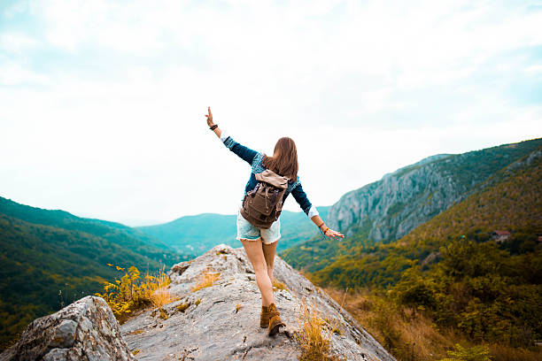
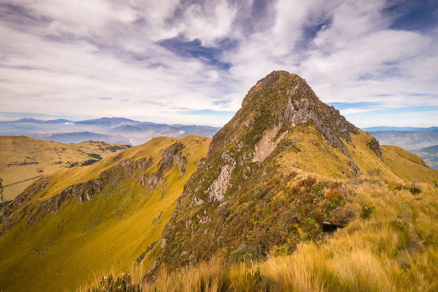
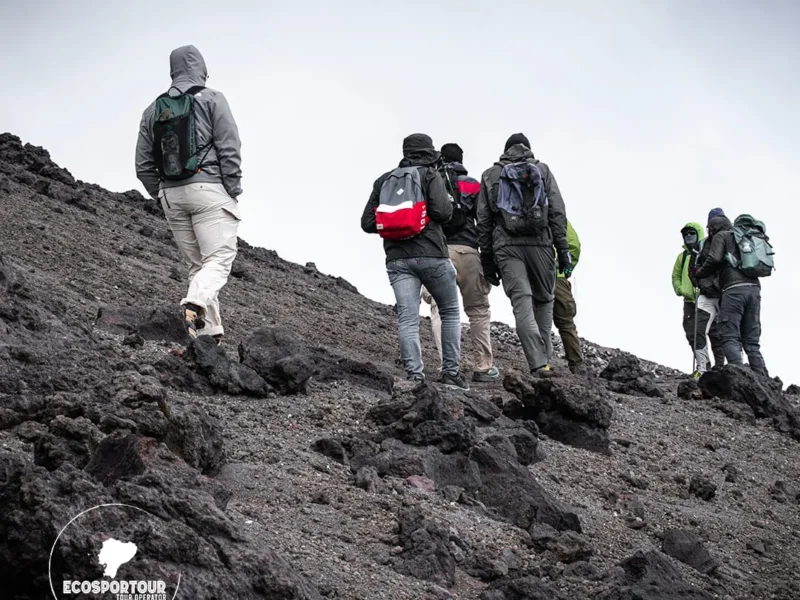
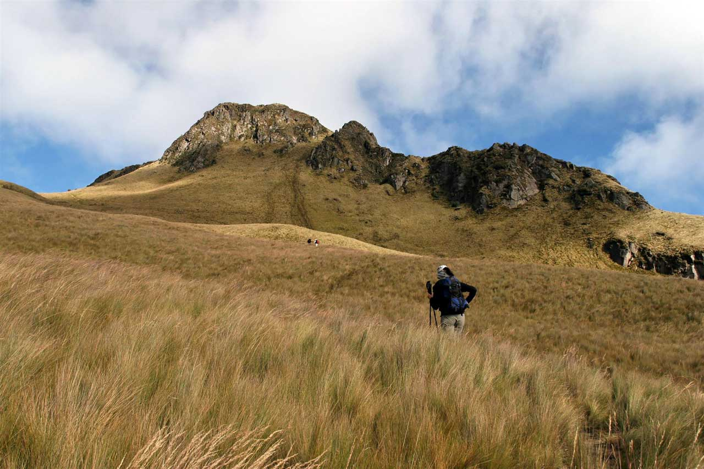
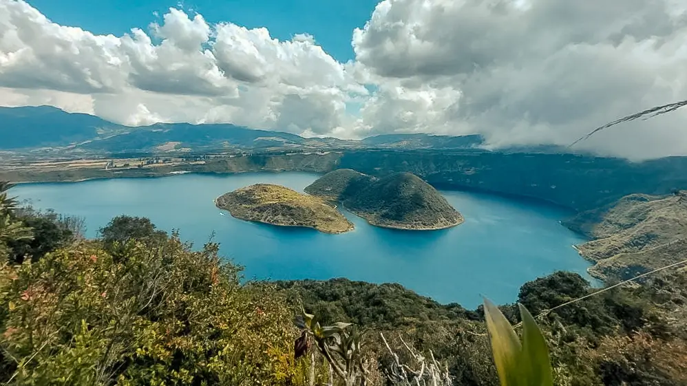
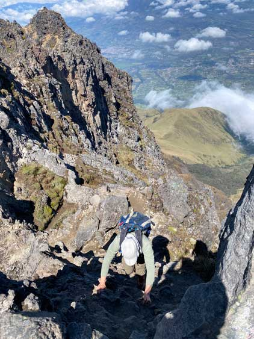
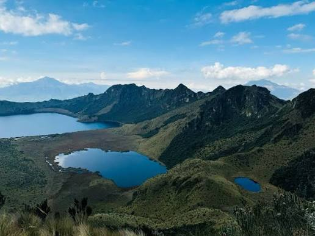
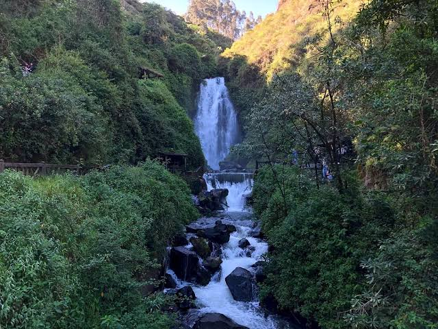

In Otavalo you will find the best mountains to go hiking such as: The Fuya Fuya located in Mojanda, the Imbabura, Cuicocha among others. Come and have the best adventure of your life!


In Otavalo you will find the best mountains to go hiking such as: The Fuya Fuya located in Mojanda, the Imbabura, Cuicocha among others. Come and have the best adventure of your life!
Founded in the heart of Imbabura Province, our team began guiding travelers and locals across Otavalo's iconic volcanic peaks, crater lakes, and mountain trails. What started as small weekend expeditions to Mojanda and Cuicocha has grown into a dedicated outdoor adventure company.

Today, our experienced local guides lead safe, unforgettable treks across northern Ecuador's high-altitude paramo landscapes. Whether you are conquering Fuya Fuya or circling Laguna Cuicocha, we connect adventurers with the natural beauty and culture of Otavalo.




